The hole the user spotted in the north-east of the districts-by-state tilegram is a lattice cell ringed by assigned tiles that is not a core tile, so neither PR #30's hole check nor PR #31's n_unassigned_core_tiles could see it. Widening the count to the whole lattice and offering such cells to the ring relocation closes it. Only districts+group_by with morph=True changes; the other seven configurations are bit-identical.
The user, reading PR #31's figure: *"the districts grouped by state name appears to show a hole in the north east."* PR #31's own numbers for that input — 8 ring tiles used, 12 empty core tiles — do not explain it: those 12 empty core tiles cluster in the Great Lakes (7) and the Pacific Northwest (5), nowhere near the north-east.
The north-east hole is a different animal. Lattice cell 1044 is unassigned and **every one of its six neighbours is assigned** (Connecticut, Massachusetts, New Hampshire x2, New York x2), yet it is not a core tile: the morph left a thin spot there, its overlap with the study union fell below min_overlap_frac, and calibration dropped it. So:
MosaicMetrics.n_unassigned_core_tiles (PR #31) iterates core tiles — it cannot see it._relocate_ring_tiles only ever targeted unassigned **core** tiles, so nothing could claim it.**Two metrics in a row were blind to the same cell.** A cell ringed by assigned tiles is a visible hole whatever its overlap fraction, so the count has to be taken over the whole lattice, not over the core.
1. MosaicMetrics.n_enclosed_unassigned_tiles — counted over the whole lattice. 2. Enclosed non-core cells become relocation targets, so a protruding ring tile can be pulled into one, removing a tail and a hole at once. 3. The relocation runs in **two passes, core targets first**, so the pass that existed before reaches its fixed point untouched.
Accept only when no split count rises and (empty_core, empty_core + enclosed) falls lexicographically. Exact tile counts stay structural: ownership shifts along a path, so every region loses one tile and gains one.
pp is discrete Polsby-Popper (see the note on the instrument below).
| Configuration | ring used | empty core | **enclosed (widened)** | split regions | split groups | pp min | pp mean | regions correct | wall s |
|---|---|---|---|---|---|---|---|---|---|
| fixture / morph=True | 0 → 0 | 2 → 2 | 0 → 0 | 0 → 0 | 0 → 0 | 0.4047 → 0.4047 | 0.5773 → 0.5773 | 9/9 | 0.6 |
| fixture / morph=False | 0 → 0 | 1 → 1 | 0 → 0 | 0 → 0 | 0 → 0 | 0.4047 → 0.4047 | 0.6070 → 0.6070 | 9/9 | 0.1 |
| states / morph=True | 2 → 2 | 2 → 2 | 0 → 0 | 0 → 0 | 0 → 0 | 0.3401 → 0.3401 | 0.6969 → 0.6969 | 49/49 | 1.4 |
| states / morph=False | 4 → 4 | 3 → 3 | 0 → 0 | 0 → 0 | 0 → 0 | 0.2519 → 0.2519 | 0.6858 → 0.6858 | 49/49 | 1.0 |
| districts / morph=True | 6 → 6 | 10 → 10 | 1 → 1 | 0 → 0 | 0 → 0 | 0.9069 → 0.9069 | 0.9069 → 0.9069 | 432/432 | 4.3 |
| districts / morph=False | 6 → 6 | 16 → 16 | 1 → 1 | 0 → 0 | 0 → 0 | 0.9069 → 0.9069 | 0.9069 → 0.9069 | 432/432 | 3.4 |
| **districts + group_by / morph=True** | 8 → 8 | 12 → 12 | **1 → 0** | 0 → 0 | 0 → 0 | **0.1449 → 0.1747** | **0.4686 → 0.4699** | 432/432 | 4.3 |
| districts + group_by / morph=False | 6 → 6 | 16 → 16 | 1 → 1 | 0 → 0 | 1 → 1 | 0.1311 → 0.1311 | 0.4785 → 0.4785 | 432/432 | 3.6 |
One row changes, and only in the right direction. The other seven are **bit-identical**, which is what the two-pass structure buys: a single-pass version that merely added the new targets perturbed the greedy order and silently moved states/morph=True to a different, worse layout — visible only because the matrix covers eight configurations rather than one.
On districts + group_by / morph=True the worst group's compactness improves by 21%. That is not a coincidence: the arm New York had thrown around the hole is what the relocation retracted. The dendrite and the hole were partly the same defect.
Three configurations still report one enclosed cell. Those are **core** tiles (cell 804 on districts/morph=True, 783 on the two morph=False district runs) — the existing pass already targets them and the accept-guard declines every available relocation, exactly as PR #31 documented for Florida and Washington. Raising ring_swapback_max_hops does not help. Not fixed here, and not a regression.
An earlier revision of this PR carried a discriminator that tried to spare genuine lakes from being filled, by treating interior rings of the coverage union as water. **It was removed**, for three reasons:
cell inside an interior ring, so it never once fired.
cells, **8 are classified as core tiles by calibration**, so the tile budget already expects the sea to be covered and 4 are occupied even with the relocation switched off. The discriminator only stopped the relocation adding more; the source is upstream.
of error and is not enclosed by anything, so a lake rule was never going to cover it.
Critically, any such rule wants a land/water judgement, and min_overlap_frac is not one. It defaults to 0.1 deliberately, so that marginal tiles enter the pool and give the assignment room to manoeuvre — a pool-admission knob. Reusing it as geography overloads one number with two jobs. A single coherent land/water rule at calibration time is the right shape for this, and it changes tile budgets, so it belongs in its own change.
load_world() gives that future change a real-data test case: it contains exactly one interior ring, the Caspian Sea, bordered by Azerbaijan, Iran, Kazakhstan, Russia and Turkmenistan.
The donut fixture stays in the test suite, relabelled as a **characterisation** of current behaviour (TestInnerSeaCharacterisation) so the queued issue has a reference point and any future change here is noticed.
**STRtree predicate direction.** The removed discriminator initially used tree.query(point, predicate="contains") to ask "is this point inside a ring". Shapely applies the predicate as input.predicate(tree_geometry), so that asks whether the *point* contains the *ring* — it matched nothing at all, silently, and the whole filter was inert while looking perfectly reasonable. It needed "within". Symmetric predicates like intersects cannot be got backwards; asymmetric ones deserve a test that would fail if the direction were wrong.
**The compactness ruler was bending.** Polsby-Popper computed geometrically on unary_union of a group's tiles gave 0.1698, 0.2551 and 0.1698 across three runs of a **bit-identical** assignment: unioning tiles leaves hairline internal edges whose total length is not reproducible, and perimeter is squared in the denominator. I nearly reported a phantom regression from it. Every number here is computed combinatorially on the tile adjacency graph — area = tile count, perimeter = boundary edge count — which is exact and stable across processes. The assignment was deterministic all along; only the ruler moved.
geo_utils/contiguity.py::repair_compactness exists and mosaic does not use it. Applied offline to the finished assignment:
| Input | tiles moved | mean displacement | max displacement | worst group before → after | mean compactness before → after | splits |
|---|---|---|---|---|---|---|
| districts + group_by / morph=True | 42 (9.7%) | 1.32 tile widths | 3.22 | 0.1747 → **0.1747** | 0.4699 → 0.4896 | unchanged |
| districts + group_by / morph=False | 61 (14.1%) | 1.41 | 3.87 | 0.1311 → 0.1377 | 0.4785 → 0.5073 | unchanged |
| states / morph=True | 6 (3.9%) | 1.07 | 1.07 | 0.3401 → 0.4047 | 0.6969 → 0.7029 | unchanged |
| states / morph=False | 19 (12.3%) | 1.22 | 2.84 | 0.2519 → **0.2519** | 0.6858 → 0.7081 | unchanged |
**Recommendation: do not ship it.** It does not fix the defect that was reported. On the input the user complained about, the worst group (Pennsylvania) is *exactly* unchanged, and on morph=False it makes Pennsylvania (0.1747 → 0.1632) and Virginia (0.2245 → 0.2036) *worse* — it optimises an inertia / shared-edge objective, not compactness, so it is not even monotone in the metric we care about. What it buys is a 4-6% lift in the *mean*, paid for by 4-14% of tiles changing owner and moving more than a tile width from where the geography put them. That is real fidelity traded for cosmetic tidiness, and it leaves the dendrites in place.
Nothing about it is wired in. This is the user's call.
morph=False had never been measured before this PR. It is **not** broken: every configuration still gives every region its exact tile count. The one thing it does worse than morph=True is districts + group_by, which has 1 split group where morph=True has 0 — pre-existing, unchanged here, reported rather than fixed.
Michigan's single tile block is out of scope: multi-part geometries are not modelled and that work is queued separately.
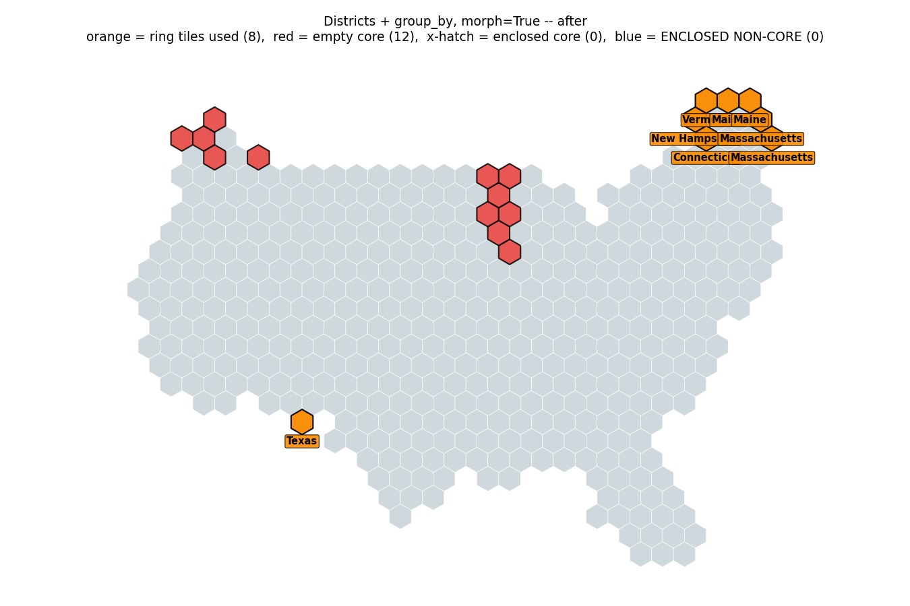
districts_group_by_after.png
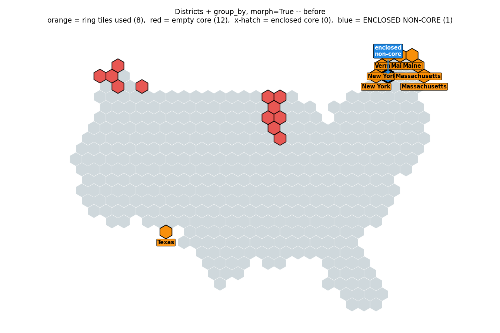
districts_group_by_before.png
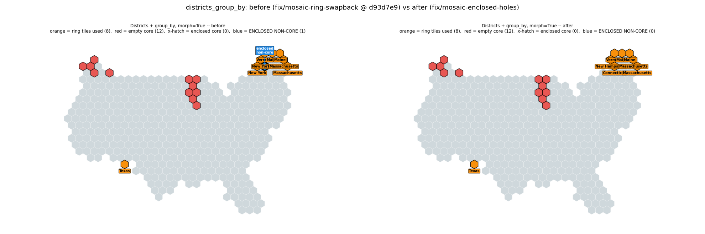
Whole map, districts grouped by state. Enclosed non-core cells 1 → 0. Ring tiles used (8) and empty core tiles (12) are unchanged: the relocation moved a tail into the hole rather than reclaiming a core tile.
donut_after.png
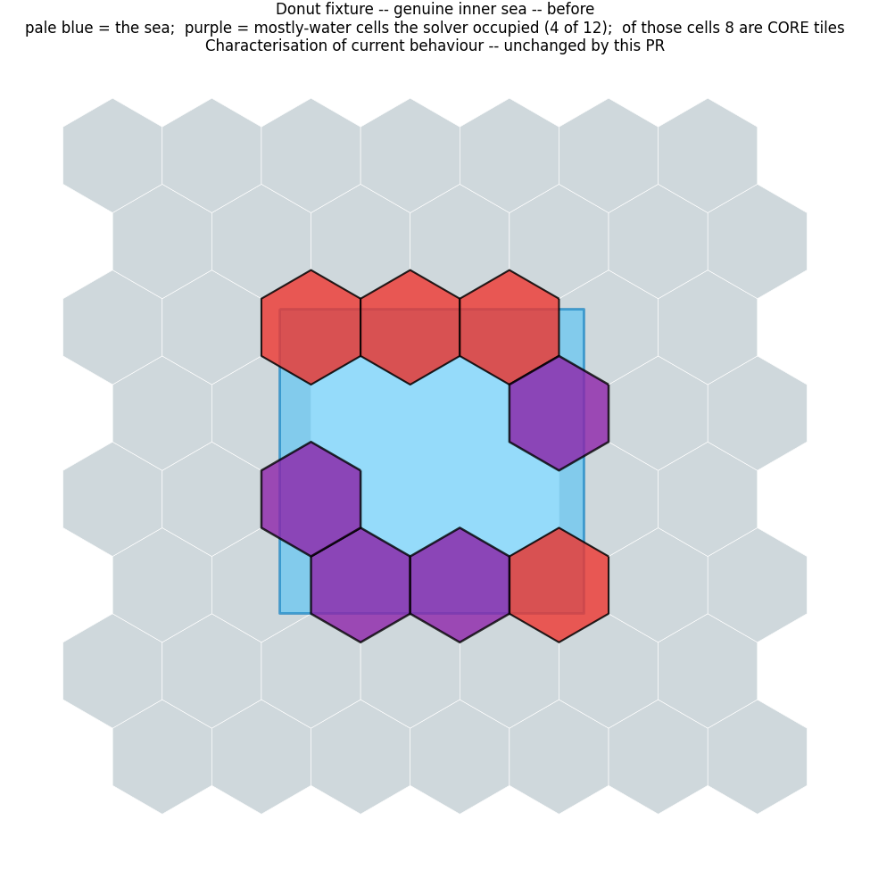
donut_before.png
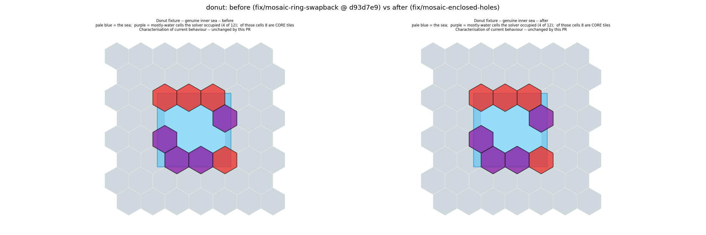
Characterisation, not a fix. Mosaic paves over a genuine inner sea: 12 mostly-water cells, of which 8 are *core* tiles and 4 end up occupied. Identical before and after — this PR does not change it.
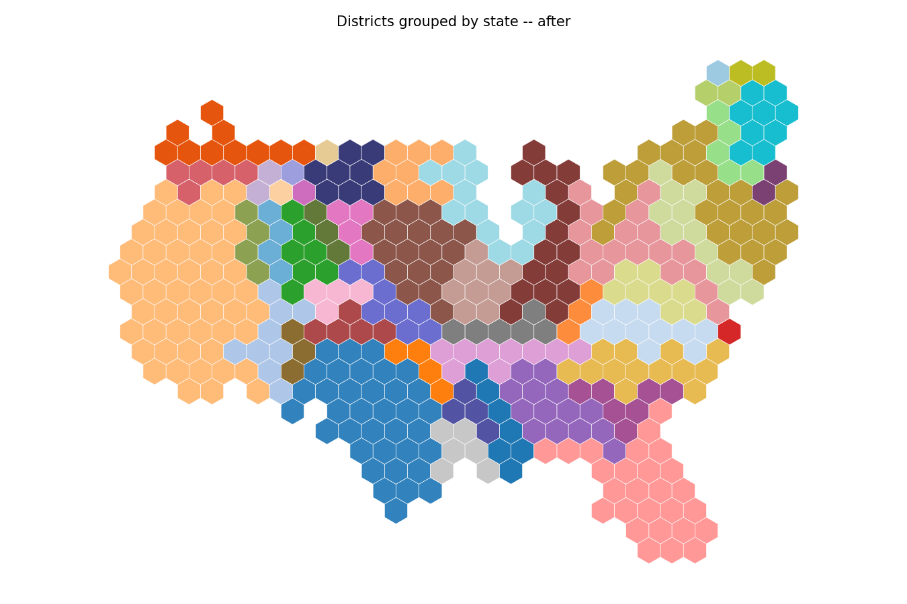
groups_after.png
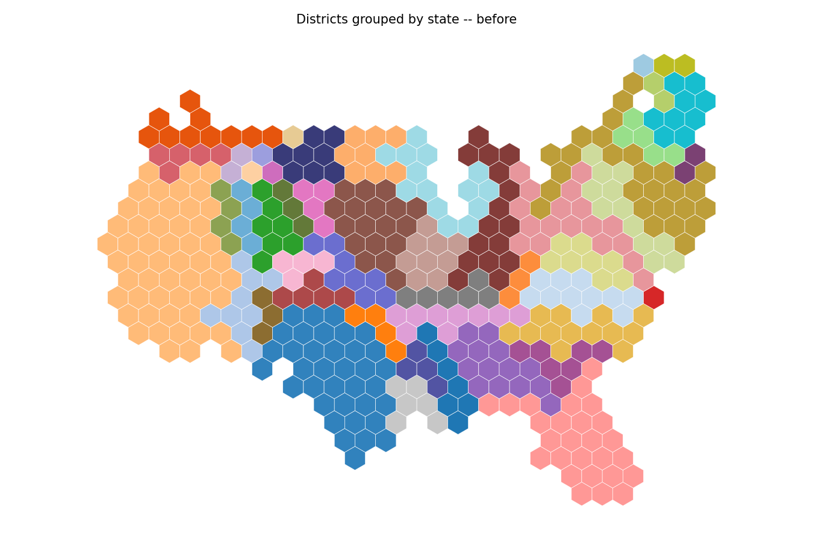
groups_before.png
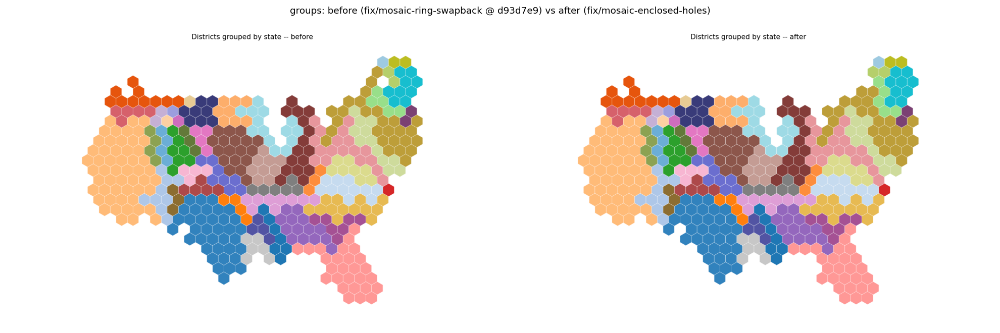
The same layout coloured by state, which is how the user saw it. The north-east now reads as solid.
nomorph_after.png
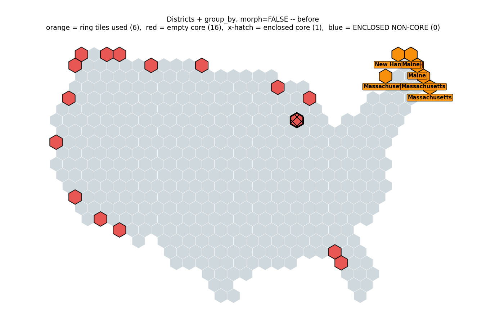
nomorph_before.png
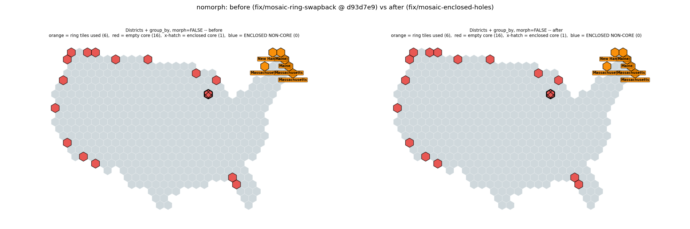
Districts + group_by with **morph=False**, never measured before this PR. Unchanged by the fix (its one enclosed cell is a *core* tile, which the existing pass already targets and cannot legally close).
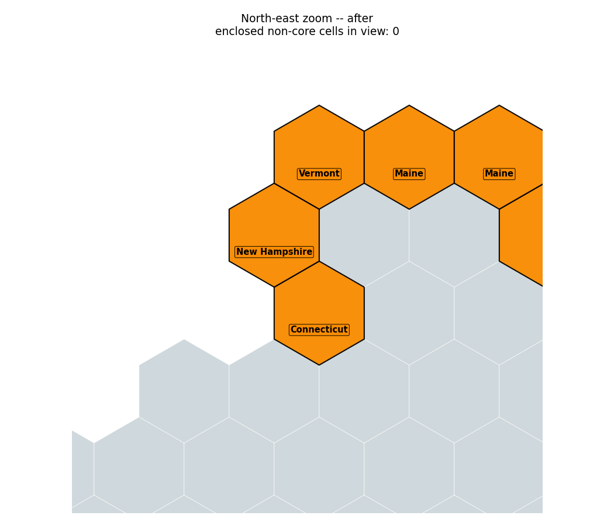
northeast_after.png
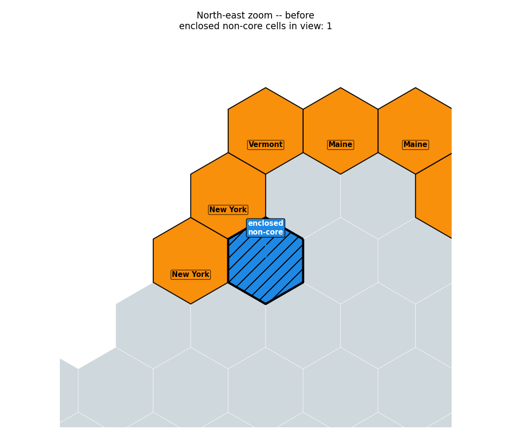
northeast_before.png
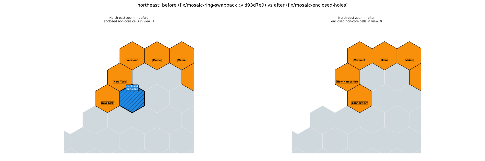
The reported defect and the fix. Blue = the enclosed non-core cell, the new third marker; orange = tiles taken from an extra ring, labelled with their owner. Before: the hole is ringed by two **New York** ring tiles — the dendrite wrapping the hole. After: the cell is filled by New Hampshire / Connecticut and New York's arm is gone.
states_after.png
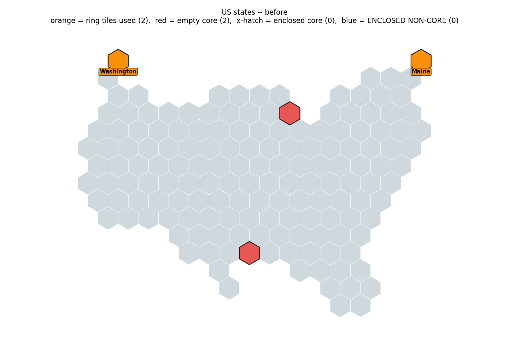
states_before.png
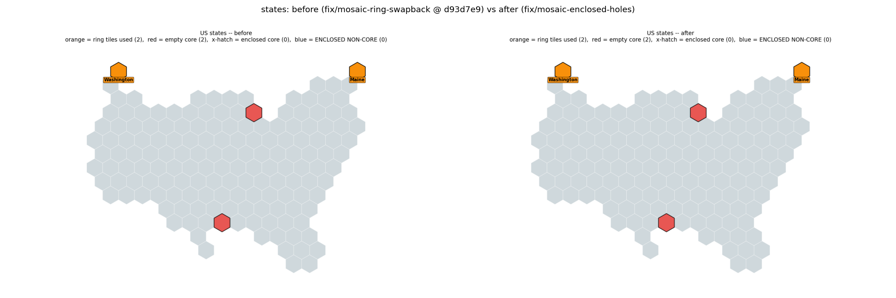
US states. Bit-identical before and after, which is the point of the two-pass structure.